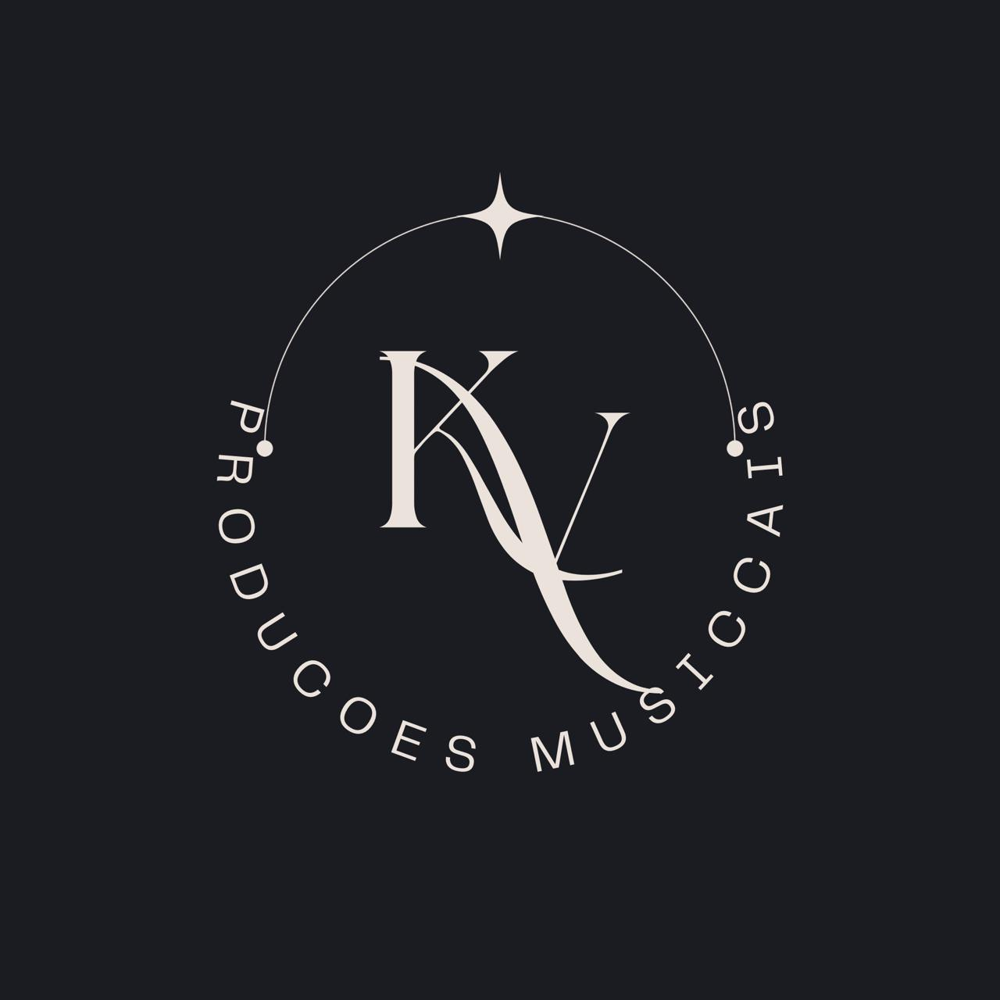

Muito mais que música.
KVOX
Criamos experiências musicais para casamentos, eventos corporativos e celebrações inesquecíveis.
Arquitetura de experiências musicais para casamentos, eventos corporativos e celebrações inesquecíveis. Transformamos momentos importantes em experiências memoráveis através de planejamento estratégico, direção artística e música ao vivo.
Solicitar orçamentoAjudamos pessoas e empresas que desejam realizar eventos memoráveis a transformar suas celebrações em experiências que conectam pessoas, despertam emoções e permanecem na memória através de planejamento estratégico, direção artística e condução musical personalizada. Mais do que apresentações musicais, entregamos tranquilidade para quem organiza e experiências que fazem sentido para cada momento do evento.
APRESENTAÇÃO PROFISSIONAL
Conheça a trajetória, os formatos de apresentação, a estrutura e os diferenciais da experiência KVOX.
Baixar Media KitACOMPANHE NOSSO TRABALHO
Bastidores, apresentações e experiências que transformam eventos.
Instagram · @kvoxoficial